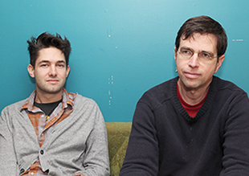
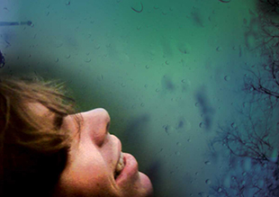

Sarah Haas, a print traffic manager with the True/False Film Fest and the person responsible for making sure films arrive at the right venues, works on the phone in the lobby of the Missouri Theatre during the True/False Film Fest on Thursday night. Photo: Greg Kendall-Ball
Festival stays true to its documentary roots
True/False sees ticket sales, international reputation rise in tenth year >>
/
True Life Fund gives back to doc causes
The True Life Fund rewards subjects of documentaries for their selfless social impact with community donations and corporate sponsorship.

Founders reflect on a decade of the True/False Film Fest
Paul Sturtz and David Wilson are no strangers to staggering exhaustion. With traveling – they inevitably get their butts kicked every year in the few months leading up to True/False.

First-time directors in documentary limelight
True/False doesn't track the number of documentaries that debut at the festival, but for those films' directors the experience is unforgettable.